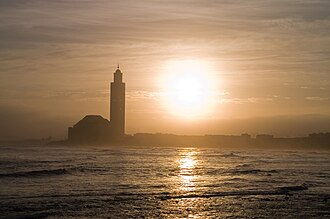

تقديم
La mosquée Hassan-II est une grande mosquée située à Casablanca (Maroc). Érigée en partie sur la mer, elle est un complexe religieux et culturel, aménagée sur neuf hectares et comporte une salle de prières, une salle d'ablutions, des bains, une école coranique (madrasa), une bibliothèque, un musée et une Académie des arts traditionnels.
مسجد الحسن الثاني هو مسجد جامع يقع بمدينة الدار البيضاء في المغرب، ويُعد أكبر مسجد في المغرب، والثاني في إفريقيا، والثالث عشر عالميا من حيث المساحة الاستيعابية. افتُتح في 30 أغسطس 1993، وشُيّد بأمر من الملك الحسن الثاني وفق تصميم المهندس المعماري الفرنسي ميشيل بينسو، بمشاركة آلاف المهندسين والحرفيين والصناع التقليديين المغاربة. يقع المسجد على الشاطئ الغربي للدار البيضاء، وقد شُيّد جزء منه فوق مياه المحيط الأطلسي وجزء آخر على اليابسة، ويُعد بذلك أول مسجد في المغرب يُبنى جزئيًا فوق البحر. ويتميز بطرازه المغربي الأندلسي، ويضم مئذنة يبلغ ارتفاعها 210 أمتار، وهي ثاني أطول مئذنة في العالم، تتوجها منارة ليزرية يشير ضوؤها نحو مكة المكرمة.
The Hassan II Mosque is a mosque in Casablanca, Morocco. It is the second largest mosque in Africa and one of the largest mosques in the world. Its minaret is the world's second tallest minaret at 210 metres (689 ft). Completed in 1993, it was designed by Michel Pinseau under the guidance of King Hassan II and built by Moroccan artisans from all over the kingdom. The minaret is 60 stories high, topped by a laser, the light from which is directed towards Mecca. The mosque stands on a promontory looking out to the Atlantic Ocean; worshippers can pray over the sea but there is no glass floor looking into the sea. The walls are made of handcrafted marble, and the roof is retractable. A maximum of 105,000 worshippers can gather together for prayer: 25,000 inside the mosque hall and another 80,000 on the mosque's outside ground.
II. Hasan Camii Fas'ın Kazablanka şehrindedir. Fransız mimar Michel Pinseau tarafından tasarlanan ve Bouygues tarafından inşa edilen cami, Atlantik kıyısında denizin doldurulması ile elde edilen bir alan üzerine inşa edilmiştir. Aynı anda 25.000 kişinin cami içinde 80.000 kişinin avluda namaz kılmasına olanak verecek derecede geniş olan caminin minaresi, 210 metrelik yüksekliği ile dünyanın en yüksek minaresidir.
Masjid Hassan II merupakan nama masjid yang terletak di Casablanca, Maroko. Masjid ini mulai dibangun tahun 1980, didesain oleh arsitek berkebangsaan Prancis Michel Pinseau dan dibangun oleh Bouygues. Masjid ini disebut-sebut sebagai salah satu masjid terbesar di dunia. Masjid ini memiliki minaret yang paling tinggi di dunia dengan ketinggian 210 meter dan memiliki kapasitas 25.000 orang dan ditambah lagi dengan pelataran yang mampu menampung 80 ribu jemaah.
منفرد طرز تعمیر کی حامل مسجد حسن الثانی مراکش کے شہر کاسابلانکا میں واقع ہے۔ اس مسجد کا ڈیزائن فرانسیسی ماہر تعمیرات مائیکل پنیسو نے تیار کیا۔ اس نے مسجد کے ڈیزائن کی تیاری میں اسلامی فن تعمیر سے مدد لی۔ مسجد میں ایک لاکھ سے زائد نمازیوں کی گنجائش ہے۔
Die Hassan-II.-Moschee in der rund 4 Millionen Einwohner zählenden marokkanischen Großstadt Casablanca ist eine der größten Moscheen der Welt. Sie ist nach dem seit 1961 regierenden und im Jahr 1999 verstorbenen König Hassan II. benannt; sie wurde vom in Marokko lebenden französischen Architekten Michel Pinseau entworfen. Ihr Minarett ist – nach dem der im April 2019 fertiggestellten Großen Moschee von Algier – mit rund 200 m Höhe das zweithöchste Minarett der Welt.
La Mezquita Hassan II es una mezquita monumental ubicada en la ciudad costera de Casablanca (Marruecos) en el Boulevard Sidi Mohammed Ben Abdallah y construida bajo el reinado de Hassan II, segundo monarca del país desde que este recuperó su independencia tras el periodo del Protectorado Francés.
La moschea di Hassan II di Casablanca, in Marocco, edificata per volontà del sovrano Hassan II e inaugurata nel 1993, è per dimensioni la moschea più grande del Marocco e tra le più grandi al mondo.
A Mesquita de Hassan II ou Mesquita de Haçane II é uma grande mesquita da cidade de Casablanca (Marrocos) no Boulevard Cide Maomé ibne Abedalá e é a 14.ª maior mesquita do mundo e a 3.ª maior em África. Tem o segundo minarete mais alto do mundo com 210 metros, encimado por um laser direcionado para Meca e que pode ser visto a vários quilómetros de distância. Conta com as últimas tecnologias como resistência sísmica, tecto que se abre automaticamente, soalho aquecido e portas eléctricas. É das poucas mesquitas do mundo muçulmano que permite a visita a turistas não muçulmanos.
De Hassan II-moskee in Marokko is een moderne grote moskee gebouwd in opdracht van koning Hassan II. Het is de grootste moskee van het land en behoort tot de 7 grootste moskeeën in de wereld. De moskee werd ontworpen door de Franse architect Michel Pinseau en gebouwd door de onderneming Bouygues. De moskee ligt aan de kust en biedt uitzicht over de Atlantische Oceaan. Naast de 25.000 mensen die binnen een plek kunnen vinden is er buiten plaats voor 85.000 mensen.
哈桑二世清真寺 是摩洛哥的一座清真寺，位于卡薩布蘭卡（达尔贝达）的大西洋海岸上，其中三分之一的面积建在海上。因系前摩洛哥国王哈桑二世发起并捐资筹建，故名。1986年7月12日动工，1993年8月30日竣工，耗资近6亿美元。建筑面积2万平方米，宽100米，长200米，高60米；礼拜殿及广场可容纳10万人做礼拜。寺内宣礼塔高达210米，是世界最高的宣礼塔。男女沐浴室可容纳1400人沐浴。规模为世界第三大清真寺。另有伊斯兰教经学院、图书馆、讲演厅、会议厅等。
ハサン2世モスク(ハサンにせいモスク、英語: Hassan II Mosque, アラビア語: مسجد الحسن الثاني)はモロッコ最大都市のカサブランカにあるモスク。高さは210mあり、世界で2番目で高いミナレットとなっている。ミナレットの頂上には参拝者にメッカの方角わかるようにレーザーが設置されている。ハッサン2世モスクとも表記される。
하산 2세 모스크(아랍어: مسجد الحسن الثاني)는 모로코 카사블랑카에 있는 모스크이다. 모로코에서 가장 큰 모스크이자 세계에서 13번째로 큰 모스크이다. 하산 2세 모스크의 미나레트는 200여m로 세계 최대 높이이다.
Великая мечеть Хасана II — мечеть в Касабланке, крупнейшая в Марокко. Сооружение находится на намыве Атлантического океана, вид на который открывается из гигантского стеклянного зала, вместимостью в 25 тысяч верующих. Ещё 80 тысяч человек могут молиться на прилегающей к мечети площади. Таким образом, общая вместимость составляет 105 тысяч верующих. Высота единственного минарета равна 210 метрам. Дизайн разработал французский архитектор Мишель Пенсо.
Nhà thờ Hồi giáo Hassan II là một nhà thờ Hồi giáo ở Casablanca, Maroc. Đây là nhà thờ Hồi giáo lớn thứ hai trên thế giới. Ngọn tháp (minara) của nó là cao nhất thế giới trong số các ngọn tháp nhà thờ Hồi giáo với chiều cao 210 m. Nó được xây dựng nhân lễ kỷ niệm 60 năm ngày sinh của quốc vương Maroc khi đó là Vua Hassan II và được hoàn thành vào năm 1993.
Hassan II:s moské är en moské i Casablanca i Marocko, och är världens högsta moské. Den färdigställdes 1993, och ritades av den franske arkitekten Michel Pinseau. Moskén är namngiven efter Marockos kung Hassan II. Den mäter 200 x 100 meter, och står precis vid havet. Minareten är 210 meter hög vilket är högst i världen. Detta gör att det är enda minareten i världen som har en hiss. I moskén finns en koranskola, hammam, ett omfattande bibliotek, ett museum över Marockos historia och konferensrum. Bönehallen rymmer 25 000 människor, där män ber på golvet och kvinnor på de två läktare som finns längs med väggarna. Ytterligare 80 000 människor får plats på torget utanför moskén.
Moscheea lui Hassan al II-lea este o moschee din Casablanca, Maroc. Ea deține mai multe recorduri: este cea mai mare moschee din Maroc, cea mai mare moschee din Africa, are cel mai înalt minaret din lume și este printre cele mai mari moschei din lume.
قصص وروايات
واقعة تاريخيةمسجد مبنيّ على الماء
أراد الملك الحسن الثاني أن يكون للدار البيضاء صرح كبير تفخر به على الدوام، فاختار أن يبنيه جزئيًا على المحيط الأطلسي. وعلّل ذلك بالآية السابعة من سورة هود التي تذكر أن عرش الله كان على الماء. ويمتدّ جزء من قاعة الصلاة فوق البحر، وتحميه حواجز من أمواج قد يبلغ ارتفاعها عشرة أمتار. بل إن جزءًا من الأرضية مصنوع من الزجاج يُرى منه الماء.
المصدر: Wikipedia : Hassan II Mosque
واقعة تاريخيةتبرّع بها المغاربة، ومئذنة بطول 210 أمتار
بدأت الأشغال سنة 1986 ودامت سبع سنوات، وكان يعمل فيها ما يصل إلى 2500 عامل ليلًا ونهارًا، وزيّن المسجدَ نحو عشرة آلاف حرفي. وجاء جزء كبير من التمويل من اكتتاب عام بين المغاربة، وكان ذلك محلّ نقاش في البلاد. ودُشّن المسجد في 30 أغسطس 1993. وكانت مئذنته البالغة 210 أمتار الأعلى في العالم حتى اكتمال جامع الجزائر الأعظم الذي تبلغ مئذنته 265 مترًا.
المصدر: Wikipedia : Hassan II Mosque · Wikipedia : Djamaa El Djazaïr
على الخريطة
وثائق وروابط
- Wikipédia — Français
- Wikipédia — العربية
- Wikipédia — English
- Wikipédia — Türkçe
- Wikipédia — Bahasa Indonesia
- Wikipédia — اردو
- Wikipédia — Deutsch
- Wikipédia — Español
- Wikipédia — Italiano
- Wikipédia — Português
- Wikipédia — Nederlands
- Wikipédia — 中文
- Wikipédia — 日本語
- Wikipédia — 한국어
- Wikipédia — Русский
- Wikipédia — Tiếng Việt
- Wikipédia — Svenska
- Wikipédia — Română
- Wikidata — Q41346
البيانات: ويكي بيانات (CC0)، تُحدَّث كل 3 أشهر. السنة هي أقدم تاريخ معروف لبناء المبنى: فإن صار مسجدًا لاحقًا (مثل آيا صوفيا) فهي سنة المبنى الأصلي. الصور: ويكيميديا كومنز، المؤلف والرخصة في صفحة كل صورة.